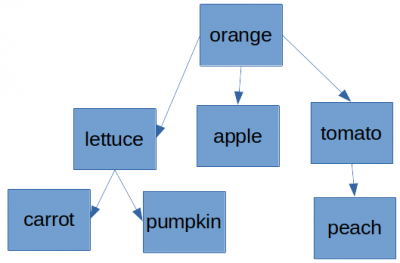
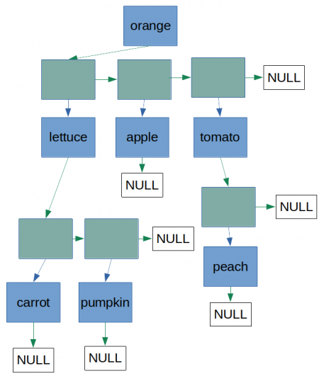

−Table of Contents
Assignment 2 (Spring 2023)
Please read the whole page word by word from top to bottom at least once. Do not just skim through. Before you ask a question please check again whether the answer can already be found here and give yourself some time to think.
Context
We have seen binary trees and in particular ordered binary trees. This assignment deals with a different kind of trees that is not binary (i.e. each node of the tree can have several subtrees) and is not ordered.
For example:

In order to implement this data structure we use the principles we have seen in the implementation of trees and linked lists. This can be visualised as in the following figure where the blue rectangles are nodes of the tree and the green rectangles are nodes of linked lists which provide the connection to the subtree(s):

Code
The definition of the structured data types for the nodes mentioned above can be found in the following code. Complete the code as instructed in the comments.
- tree.cpp
#include <iostream> #include <string> #include <fstream> #include <cstdlib> /// this is just the pre-declaration of both structured data types /// in order to allow usage in member data fields struct TreeNode; struct EdgeNode; typedef std::string tree_t; struct EdgeNode{ TreeNode* subtree; EdgeNode* next; }; struct TreeNode{ tree_t val; EdgeNode* subtree_l; }; TreeNode* allocate_tree_node(tree_t e){ TreeNode* tmp = new TreeNode; tmp->val = e; tmp->subtree_l = NULL; return tmp; } EdgeNode* cons_edge_node(TreeNode* t, EdgeNode* subtree_l){ EdgeNode* tmp = new EdgeNode; tmp->subtree = t; tmp->next = subtree_l; return tmp; } void print_tree(TreeNode* t){ if(t != NULL){ EdgeNode* it = t->subtree_l; while(it != NULL){ print_tree(it->subtree); it = it->next; } std::cout << t->val << std::endl; } } TreeNode* build_tree_root(tree_t e){ return allocate_tree_node(e); } /// this function looks for the node containing the value e /// within the tree (whose root is) t /// and it returns the address of the node if found /// and NULL otherwise TreeNode* find_node(tree_t e, TreeNode* t){ /// TODO: complete this function } /// this functions adds to the tree (whose root is) t /// a node with value d as a child of the node with value s /// (see also how this function is called in the main) void add_tree_node(tree_t s, tree_t d, TreeNode* t){ /// TODO: complete this function /// within this function you must (meaningfully) use /// function find_node } /// this function returns the number of nodes in the tree (whose root is) t /// (see also example of expected output below) int count_nodes(TreeNode* t){ /// TODO: complete this function } /// this function returns the number of leaf nodes in the tree (whose root is) t /// (see also example of expected output below) int count_leaf_nodes(TreeNode* t){ /// TODO: complete this function } /// this function deallocates *all* the memory (dynamically) allocated for the tree /// this will include instances of the structured data type TreeNode /// and instances of the structured data type EdgeNode void deallocate_tree(TreeNode* t){ /// TODO: complete this function } int main(){ std::string filename; std::cin >> filename; std::ifstream infile; infile.open(filename); if(!infile.is_open()){ std::cout << "error opening file" << std::endl; return(EXIT_FAILURE); } std::string s1, s2; infile >> s1; TreeNode* t1; t1 = build_tree_root(s1); while(infile >> s1 >> s2){ add_tree_node(s1, s2, t1); } /// we could have infile.close(); here but in this case we are ok with infile being closed /// by the std::ifstream destructor when infile goes out of scope (at the end of the main) print_tree(t1); std::cout << "node count: " << count_nodes(t1) << std::endl; std::cout << "leaf node count: " << count_leaf_nodes(t1) << std::endl; deallocate_tree(t1); }
Input
The input for this program (which is read from a text file whose name is entered by the user) begins with the root node, which is followed by pairs of nodes denoting the parent node (which must be a node that has appeared at some point before in the input) and the child node. Unlike the examples of trees we have seen previously, this data structure does not support different nodes having the same content and since this is a tree a child node cannot have more than one parent.
For example the tree in the figure above could be generated by this input:
orange orange tomato orange apple orange lettuce tomato peach lettuce pumpkin lettuce carrot
Another example (equivalent to the first one):
orange orange tomato orange apple orange lettuce lettuce pumpkin tomato peach lettuce carrot
A third one (also equivalent):
orange orange tomato orange apple tomato peach orange lettuce lettuce pumpkin lettuce carrot
A fourth one (also equivalent):
orange orange tomato tomato peach orange apple orange lettuce lettuce pumpkin lettuce carrot
The following input, for example, would be valid but for a different tree from the one in the figure:
orange orange tomato tomato peach orange lettuce orange apple lettuce pumpkin lettuce carrot
This is because in this case the “leftmost” child of orange should be apple instead of lettuce.
The following input, for example, wouldn't be valid:
orange orange tomato tomato peach orange apple lettuce pumpkin orange lettuce lettuce carrot
This is because in the fifth line lettuce appears as a parent node but it hasn't appeared previously in the input.
Output
If the input is as in the example we are considering, we expect the following output to be printed when function print_tree is reached in the main:
carrot pumpkin lettuce apple peach tomato orange node count: 7 leaf node count: 4
As you can see the order is not similar to the printing we saw for ordered binary trees (for example the root node is printed last).
Guidelines
The program will be tested overall and the functions will also be tested one by one. You can assume that the functions and the program will always be tested with valid, meaningful and consistent input.
You have to implement the functions as instructed by the comments in the code provided. You can add and define additional functions for that purpose (you can also use function declarations). You can remove the comments included in the code provided if you want. However in the file you submit there must be no changes in any other way to the code that you have been given, including the main. This also implies, for example, that you can't include any headers in addition to those already included and you can't use any functions or data structures defined in headers that are not already included (for example you cannot use std::vector or std::list).
Do not add any instructions involving user input or output or any input or output from files.
There are two functions in the code provided (allocate_tree_node and cons_edge_node) that use the keyword new. The keyword new must not appear anywhere else in the program. Do not use the keyword malloc or any of its variations.
All the variables must be declared in the scope of a function (either the main or some other one). In other words, global variables are not allowed.
All the loops must be controlled/terminated either by the loop condition or by return. Statements such as break, continue, goto are not allowed anywhere in the program. Do not use the switch statement.
The code must be such that it can successfully compile (using the default configuration) using as compiler gcc/g++ (9.4 or 10.3) or clang (12.0.1). If you can't test with these compilers and you want to be sure that there are no issues, I would advise you to only use features that have been covered during the module.
Submission
Submit the source file (the .cpp file) using the submission area linked from the “ELEC40004 - Programming for Engineers 2022-2023” page on Blackboard.
You can submit unlimited times and only the last submission will be considered, so submit early and submit often.
Assessment criteria
In order to be awarded a mark in the the 70%-100% range, a submission must fulfill all of these conditions:
- All the requirements and guidelines must be respected.
- The code must be entirely correct. For example (this is not an exhaustive list):
- If one or more of the automated tests are not passed, the code is not correct.
- If there are occurrences of crashes, infinite loops, or infinite recursion, the code is not correct.
- If there are undefined behaviour instructions in the code, then it is not correct. This is regardless of whether or not it is noticeable when the program is run and regardless of whether it seems to work on your computer.
- There should be no memory leaks.
- The code must be generally well indented and formatted and readable, with reasonably meaningful names for the variables.
Within the 70%-100% range the criteria are:
- The more readable the code, the better.
- Avoid code duplication and wastefulness (but the code doesn't need to be optimised for efficiency).
We are not really going to consider comments. Feel free to add some if you think they would be useful for yourself to understand your own code or to explain some aspects of your program. But it is more important that your code is clear and readable (minimising the need for comments). Do not add too many comments as that can actually make the code less readable.
Plagiarism and collusion
I remind you that this is an individual assignment and you are expected to submit only your own work, as during an exam. Thus, you are expected not to submit work based on someone else's, not to show your work to others and not to work in collaboration with others.
The submissions will be checked for plagiarism and collusion using a detection tool. Please do not include any personal or identifiable information in the content of your source file (such as writing your name or username in comments).
It's important that your code for assessed assignments is never on any public repositories. This implies that you can't upload it on, for example, a public github repository (not even when you have completed first year) and it can't be on a public replit account (all free replit accounts are public).
Grades and feedback
Grades and feedback will be available on Blackboard by Friday 5th May (I will send a notification email).
Help with the assignment
We can't help with the assignment because it's assessed. We can however help you with other exercises on the topics involved in the assignment.
Asking a question or discussing this assignment
For any questions related to this assignment please submit the contact form by 4pm Wednesday 22nd March.
I encourage you to first look for the answer again in this page, on this website or on Blackboard and make sure you have read everything before you submit the form.
Changelog
Added clarification and emphasis to “Unlike the examples of trees we have seen previously, this data structure does not support different nodes having the same content.”: “Unlike the examples of trees we have seen previously, this data structure does not support different nodes having the same content and since this is a tree a child node cannot have more than one parent.”
Added clarification and emphasis to “You can assume that the functions and the program will always be tested with meaningful and consistent input.”: “You can assume that the functions and the program will always be tested with valid, meaningful and consistent input.”
Added clarification to “You can add and define additional functions for that purpose.”: “You can add and define additional functions for that purpose (you can also use function declarations).”